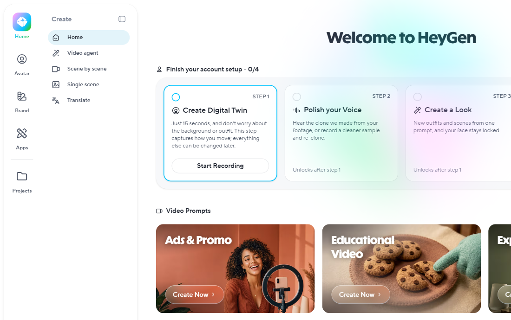
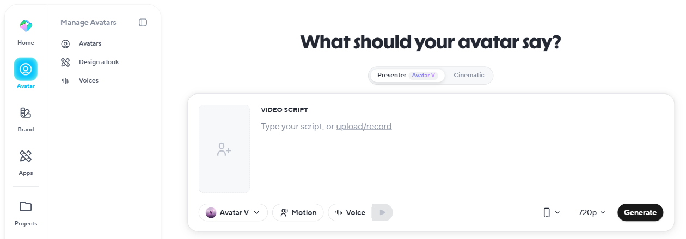
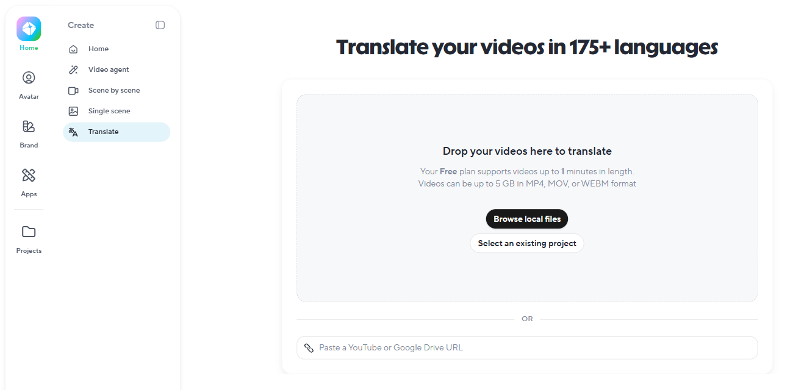

HeyGen
סרטון עם מגיש, בלי מצלמה
כותבים תסריט בעברית, בוחרים מגיש, ומקבלים סרטון מוכן. ואפשר גם לתרגם סרטון קיים לשפה אחרת.
מגיש שמדבר בשבילכם
סרטון עם מגיש מקצועי, בלי לצלם אפילו פריים אחד. עובדים מהדפדפן.
אווטאר שמקריא
בוחרים מגיש מתוך מאות אווטארים מוכנים, מדביקים תסריט, והוא מדבר עם סנכרון שפתיים.
תאום דיגיטלי שלכם
מצלמים את עצמכם 15 שניות, ומקבלים אווטאר שלכם שמציג כל תסריט שתכתבו.
תרגום סרטון
סרטון קיים מדובב לשפה אחרת, בקול של הדובר ועם סנכרון שפתיים. גם לעברית.
יש תוכנית חינמית להתנסות אישית: 3 סרטונים בחודש, עד דקה כל אחד, עם סימן מים. סרטון שיוצא לתלמידים, להורים או לצוות צריך תוכנית בתשלום. הפרטים בפרק 3.
איך מתחילים
שלושה צעדים, בלי כרטיס אשראי.
נכנסים ל-heygen.com
נרשמים עם חשבון Google או עם מייל. פתיחת חשבון מגיל 18 בלבד.
בוחרים אווטאר וקול עברי
ברשימת הקולות מחפשים Hebrew (Israel), ומאזינים לשניים או שלושה קולות על משפט אחד.
מדביקים תסריט ולוחצים Generate
האווטאר מקריא את הטקסט, ותוך דקות יש סרטון MP4 מוכן.
הממשק ברובו באנגלית, אבל התסריט, הקול והכתוביות יכולים להיות בעברית. גם בתוכנית החינמית יש קולות בעברית.
המסך הראשון אחרי שנכנסים
בצד שמאל תפריט Create. ארבעה מקומות מספיקים כדי להתחיל.
- 1
Video agent
מתארים במילים איזה סרטון צריך, והסוכן בונה אותו.
- 2
תאום דיגיטלי
Create Digital Twin: לוחצים Start Recording ומצלמים 15 שניות.
- 3
Translate
תרגום של סרטון קיים לשפה אחרת.
- 4
Avatar
בחירת מגיש, וכתיבת התסריט שהוא יקריא.

כאן כותבים מה המגיש יגיד
לוחצים Avatar, ונפתח מסך עם השאלה What should your avatar say?
- 1
Avatar
הכניסה למסך, בפס הצד.
- 2
בוחרים מגיש
אווטאר מוכן, או גוררים לכאן תמונה.
- 3
כותבים את התסריט
או מדביקים טקסט מוכן. אפשר גם להעלות הקלטה.
- 4
בוחרים קול
ב-Voice מחפשים קול עברי, ומאזינים לפני שלוחצים Generate.

למעלה בוחרים מצב עבודה: Presenter, שעובד עם Avatar V, או Cinematic.
מתרגמים סרטון קיים
לוחצים Translate, ומביאים את הסרטון באחת משתי דרכים.
- 1
Translate
בתפריט Create.
- 2
מעלים מהמחשב
Browse local files: קובץ MP4, MOV או WEBM.
- 3
או מדביקים קישור
לסרטון ביוטיוב או ב-Google Drive.

במסך עצמו כתוב שבתוכנית החינמית אפשר לתרגם סרטון של עד דקה.
02
פרק 2
איך עובדים עם HeyGen
מהתסריט הראשון, דרך אווטאר של עצמכם, ועד סרטון שמדבר בכמה שפות.
מתסריט לסרטון
המסלול הבסיסי, וזה שתעשו הכי הרבה.
כותבים תסריט קצר
בערך 130 עד 150 מילים לדקת וידאו. משפטים קצרים ושפה מדוברת.
בוחרים אווטאר וקול עברי
לתוכן רשמי מגיש "אולפני", ולרשתות סגנון קליל יותר. מדליקים כתוביות.
לוחצים Generate, מאזינים ומורידים
מקשיבים פעם אחת לכל הסרטון לפני שמשתמשים בו, במיוחד בעברית.
כשמעלים הקלטה של עצמכם במקום להקליד: Speech Cleanup מנקה מהדיבור מילות מילוי, הפסקות ורעשי רקע. איך זה עובד בעברית? כדאי לבדוק על הקלטה קצרה.
מבקשים סרטון במילים
ב-Video agent מתארים במילים מה צריך, והסוכן בונה טיוטה של סרטון.
מתארים
נושא, קהל ואורך. ככל שהתיאור מדויק יותר, הטיוטה טובה יותר.
בוחרים סגנון
Video Agent Styles: יותר מ-100 סגנונות מוכנים למראה הסרטון.
או מתחילים מכרטיס
בדף הבית יש כרטיסים מוכנים, כמו Educational Video ו-Tips & How-To. לוחצים Create Now.
אווטאר של עצמכם, מ-15 שניות
מאז Avatar V, שהושק ב-8 באפריל 2026, מספיק קטע צילום של 15 שניות כדי ליצור תאום דיגיטלי.
מצלמים 15 שניות
במצלמת המחשב או בטלפון. תאורה טובה ורקע שקט משפרים את התוצאה.
מקליטים הצהרת הסכמה
משפט קצר מול המצלמה. כך המערכת מוודאת שמי שמסכים הוא מי שמופיע בצילום.
מעכשיו הוא מצלם בשבילכם
כל תסריט חדש הופך לסרטון שלכם, בלי יום צילומים. בחינמי אפשר לנסות תאום אחד.
רק הפנים שלכם. אווטאר של איש צוות אחר נוצר רק אחרי שהוא הסכים במפורש והקליט הסכמה בעצמו. וכשמפרסמים, אומרים לקהל שזה אווטאר.
מקליטים פעם אחת, מדברים בכל שפה
תרגום וידאו מדבב את הסרטון בקול של הדובר, ומזיז את השפתיים לפי השפה החדשה.
מעלים סרטון שמדברים בו
הרצאה מוקלטת, סרטון הסבר או עדכון לצוות. מהמחשב או בקישור.
בוחרים שפת יעד
Hebrew (Israel) נתמכת בתרגום וידאו, כולל סנכרון שפתיים. בתוכניות בתשלום יש יותר מ-175 שפות.
מקבלים דיבוב
אותו דובר, אותו קול, בשפה אחרת. צופים בכל הסרטון לפני שמשתמשים בו.
שימושי במיוחד בבית ספר רב-לשוני: אותה הודעה מההנהלה, בעברית, בערבית וברוסית. כדי לשלוח אותה להורים או לצוות צריך תוכנית בתשלום.
עברית ב-HeyGen, כן באמת
נתמכת, עם כמה דברים שכדאי לבדוק באוזניים שלכם.
קולות בעברית
Hebrew (Israel) ברשימת הקולות. האווטאר מקריא את הטקסט שלכם.
סנכרון שפתיים
תנועות הפה מותאמות לדיבור בעברית.
תרגום מעברית ולעברית
הקול נשמע שלכם, והשפה מתחלפת.
כתוביות
נוצרות אוטומטית. חשוב לצפייה בטלפון בלי סאונד.
מילים בלי ניקוד נהגות לפעמים עקום. מאזינים לפני שמורידים, ומנסחים מחדש או עוברים לכתיב מלא. גם את כיוון הכתוביות בודקים על סרטון אחד לפני שסומכים עליהן.
עוד יכולות ששווה להכיר
לא חובה ביום הראשון, אבל טוב לדעת שהן קיימות.
תמונה שמדברת
Photo Avatar: מעלים תמונה אחת, והיא הופכת לדמות שמקריאה את התסריט.
סרטון עם חידון
וידאו אינטראקטיבי עם שאלות, ויצוא בתקן SCORM למערכות למידה. בתוכנית Business.
מצגת לסרטון
PPT/PDF to Video בעמוד Apps: מעלים קובץ PowerPoint או PDF, ומגיש מציג אותו.
גם בטלפון
יש אפליקציה לאנדרואיד ול-iPhone, עם הסוכן ועם תרגום.
בתוכנית Business יש גם Brand Kit: לוגו, צבעים וגופנים נטענים פעם אחת וחלים על כל סרטון.
הצ'אט כותב, HeyGen מצלם
ChatGPT, Claude או Gemini מכינים את התסריט, ו-HeyGen הופך אותו לסרטון.
בצ'אט: תסריט וגרסאות
נותנים נושא וקהל, ומבקשים תסריט מדובר של דקה. אחר כך מקצרים, מרככים, או מבקשים גרסה לרשתות.
ב-HeyGen: מגיש וקול
מדביקים את התסריט, בוחרים אווטאר וקול עברי, לוחצים Generate ומאזינים.
ב-ChatGPT וב-Claude אפשר גם לחבר את HeyGen ישירות, ולבקש את הסרטון מתוך השיחה. הדרך הבסיסית נשארת העתק והדבק.
03
פרק 3
מתי כן, ומתי לא
בלי הבטחות: מה מעולה, מה מוגבל, ומה חשוב לדעת על פרטיות ועל שיתוף.
לפני שמצלמים: פרטיות והסכמה
השקף הכי חשוב בהדרכה. קוראים אותו לפני שפותחים חשבון בית ספרי.
מגיל 18 בלבד
תלמידים לא פותחים חשבון. המורה יוצרת, והכיתה צופה.
לא מצלמים תלמידים
בתוכניות בתשלום, תנאי השימוש מתירים ל-HeyGen לאמן את המודלים שלה על התוכן, בלי אפשרות לבטל. לכן פנים וקולות של תלמידים לא נכנסים לשם.
הסכמה מפורשת מהצוות
לפני שיוצרים אווטאר של מורה או של איש צוות, מקבלים ממנו הסכמה מפורשת.
שיתוף רק בתשלום
סרטון מהתוכנית החינמית הוא לשימוש אישי ולהתנסות. שולחים לתלמידים, להורים או לצוות רק מתוכנית בתשלום.
כלל אצבע: מעלים רק מה שהייתם מוכנים שיישמר אצל חברה חיצונית. בלי פרטים אישיים של תלמידים והורים, גם לא בתוך התסריט.
מה מעולה, ומה כדאי לדעת מראש
מתי כן
- צריך מגיש קבוע שמקריא תסריט, בלי מצלמה
- מתרגמים סרטון קיים, עם הקול של הדובר
- רוצים אווטאר של עצמכם שמצלם בשבילכם
- התוכן מתעדכן הרבה: משנים טקסט, לא מצלמים מחדש
- הדרכת צוות שחוזרת על עצמה כל שנה
מתי לא, ומה עושים
- החינמי מוגבל: 3 סרטונים בחודש, עד דקה, וסימן מיםלהתנסות אישית. שיתוף ועבודה שוטפת, בתוכנית בתשלום
- הגייה עברית לא תמיד מדויקתמאזינים לפני שמורידים, וכותבים בכתיב מלא
- תלמידים לא נרשמים, ולא מצלמים אותםהמורה מפיקה, התלמידים כותבים תסריטים
- מקרוב עדיין רואים שזה AIאומרים לקהל שזה אווטאר. זה גם בונה אמון
כמה זה עולה
בדולרים.
Free
3 סרטונים בחודש, עד דקה כל אחד, עם סימן מים. אפשר לנסות גם תאום דיגיטלי אחד. לשימוש אישי בלבד, בלי שיתוף.
Creator
סרטונים שמותר לשתף. אווטאר אחד או יותר של עצמכם, ויותר מ-175 שפות. בחיוב שנתי 24$ לחודש.
Business
לצוותים: 5 אווטארים או יותר, וידאו אינטראקטיבי עם חידונים ויצוא SCORM.
חינוך
אין הנחת חינוך מפורסמת. אפשר לפנות לתמיכה ולשאול, ולבקש תשובה בכתב.
יש גם Pro ב-49$ לחודש, עם 4K. המחירים משתנים, ולכן לפני החלטה בודקים ב-heygen.com/pricing.
HeyGen או כלי אחר?
HeyGen הוא מגיש שמדבר מתסריט. כלים אחרים טובים בדברים אחרים, ולעתים קרובות הם משלימים.
HeyGen
- מגיש קבוע שמקריא את התסריט שלכם
- תרגום סרטון קיים, עם הקול שלכם וסנכרון שפתיים
- אווטאר של עצמכם מ-15 שניות צילום
- עדכון תוכן: משנים טקסט במקום לצלם מחדש
כלי אחר
- סצנות קולנועיות מפרומפט: Veo של Google
- ארגון גדול עם הרבה הדרכות עובדים: Synthesia
- ניסוי דרך API: D-ID
- מצגת שהופכת לסרטון: PPT/PDF to Video בתוך HeyGen
רגע, זה בדיוק אני
שלושה מצבים שכולנו מכירים, ואיך פותרים אותם בלי יום צילומים.
פתיחה לנושא חדש
מורה מדביקה תסריט קצר, בוחרת מגיש וקול עברי, ושולחת לכיתה סרטון פתיחה. את התסריט אפשר לכתוב יחד עם התלמידים.
בערך 10 דקות · שליחה לכיתה בתוכנית בתשלום
קליטת עובד חדש
המנהלת מקליטה פעם אחת הסבר על נוהלי בית הספר, ובתרגום יש גרסה בערבית וברוסית, באותו קול.
מקליטים פעם אחת · שיתוף עם הצוות בתוכנית בתשלום
הודעה להורים בכמה שפות
המזכירות מכינה סרטון קצר על פתיחת ההרשמה, ומתרגמת אותו לשפות של ההורים בבית הספר.
בערך 15 דקות · שליחה להורים בתוכנית בתשלום
למי זה מתאים
לכל מי שמסביר את אותו דבר שוב ושוב, או צריך להגיע לקהל בכמה שפות.
הוראה
סרטוני פתיחה והסבר לצפייה בבית, ותלמידים שכותבים תסריט למגיש. בלי לצלם תלמידים.
ניהול
הדרכת נהלים לצוות, דבר מנהל לפתיחת שנה, וקליטת עובדים חדשים בכמה שפות.
מזכירות וצוות
הודעות להורים, הסבר על הרשמה או אירוע, וגרסה מתורגמת לכל קהל.
שימוש אישי
ברכה מוקלטת לאירוע משפחתי, סרטון היכרות קצר, או סרטון שמסביר רעיון לקהילה.
כל סרטון שיוצא לתלמידים, להורים או לצוות צריך תוכנית בתשלום. בתוכנית החינמית, רק התנסות ושימוש אישי.
שישה טיפים שלא כתובים במדריכים
קוראים בקול לפני שמדביקים
מה שמסתבך לכם בפה, יסתבך גם לאווטאר. כותבים כמו שמדברים.
130 עד 150 מילים לדקה
תסריט קצר נשמע טבעי יותר, וגם חוסך מהמכסה.
קול לפני הכל
מאזינים לשניים או שלושה קולות עבריים על פסקת ניסיון, ורק אז מפיקים סרטון שלם.
אותו מגיש לכל הסדרה
עקביות בונה זהות ואמון, במיוחד בסדרת הדרכות לצוות.
כתוביות, תמיד
הרבה צופים בטלפון בלי סאונד. ובעברית עוברים על הכתוביות לפני שמשתמשים בסרטון.
אומרים שזה אווטאר
משפט אחד בתחילת הסרטון או בתיאור שלו. הקהל מעריך את זה.
שאלות שכולם שואלים
לוחצים על שאלה כדי לפתוח את התשובה.
זה באמת חינמי?
יש תוכנית חינמית, בלי כרטיס אשראי, עם 3 סרטונים בחודש וסימן מים. היא להתנסות ולשימוש אישי, ואסור להפיץ ממנה סרטונים. לשיתוף ולעבודה שוטפת צריך Creator ומעלה. הנחת חינוך לא מפורסמת, ואפשר לשאול את התמיכה.
זה עובד בעברית?
כן. יש קולות בעברית, סנכרון שפתיים, כתוביות, ו-Hebrew (Israel) נתמכת בתרגום וידאו. יש קולות בעברית גם בתוכנית החינמית.
צריך לדעת אנגלית?
הממשק ברובו באנגלית, אבל התוכן יכול להיות כולו בעברית: התסריט, הקול והכתוביות. מי שמסתדר עם כפתורים באנגלית, מסתדר עם HeyGen.
צריך מצלמה?
לא. אווטארים מוכנים עובדים מטקסט בלבד. מצלמה צריך רק לאווטאר של עצמכם: 15 שניות צילום והצהרת הסכמה קצרה.
אפשר לעבוד עם תלמידים?
לא ישירות. החשבון מגיל 18, ולא מצלמים תלמידים: בתוכניות בתשלום, תנאי השימוש מתירים לאמן את המודלים על התוכן. המורה מפיקה בתוכנית בתשלום, והתלמידים כותבים את התסריטים.
כמה זמן לוקח סרטון?
סרטון ראשון, כולל תסריט ובחירת מגיש וקול, לוקח בערך רבע שעה. מהסרטון השני זה הרבה יותר מהר.
בדקו את עצמכם
שלוש שאלות. נסו לענות בקול לפני שפותחים.
כמה צילום צריך כדי ליצור אווטאר של עצמכם?
בערך 15 שניות, עם Avatar V, ועוד הצהרת הסכמה קצרה מול המצלמה.
אפשר לשלוח להורים סרטון מהתוכנית החינמית?
לא. סרטונים מהתוכנית החינמית הם לשימוש אישי ולהתנסות. שליחה להורים, לתלמידים או לצוות דורשת תוכנית בתשלום.
מה צריך לפני שיוצרים אווטאר של מורה אחרת?
הסכמה מפורשת שלה, והקלטת הסכמה שהיא עושה בעצמה.
04
פרק 4
עכשיו אתם
לא צופים, עושים. פותחים מחשב.
סרטון מגיש ראשון, ב-5 דקות
נרשמים בחינם
ב-heygen.com, בלי כרטיס אשראי. מגיל 18.
לוחצים Avatar ובוחרים מגיש
אווטאר מוכן. לא צריך לצלם את עצמכם.
בוחרים קול עברי
ב-Voice, ומאזינים לו על משפט אחד.
כותבים שלושה או ארבעה משפטים
על משהו אמיתי שלכם, כמו שאתם מדברים.
לוחצים Generate ומאזינים
מילה נהגית עקום? משנים ניסוח ומנסים שוב.
בסוף חמש הדקות יש לכל אחד סרטון קצר עם מגיש שמדבר עברית. בחינמי, עם סימן מים ולשימוש אישי בלבד.
שלושה דברים לזכור
מגיש בלי מצלמה
תסריט, אווטאר וקול עברי, וסרטון מוכן בדקות. עדכון תוכן הוא שינוי טקסט.
עברית כן, עם אוזן
קולות, סנכרון שפתיים, תרגום וכתוביות. מאזינים ובודקים לפני ששולחים.
פרטיות לפני הכל
מגיל 18, לא מצלמים תלמידים, אווטאר של איש צוות רק בהסכמה מפורשת, ושיתוף רק מתוכנית בתשלום.
נסו עוד היום
פתחו חשבון, הפיקו סרטון אחד, והראו אותו לעמית או לעמיתה ליד המחשב.
פותחים חשבון היום
ב-heygen.com. שתי דקות, בלי כרטיס אשראי.
אתגר של 5 דקות
נושא אחד אמיתי שלכם, סרטון מגיש של עד דקה. רוצים משוב? ספרו לנו בקבוצה איך הלך.